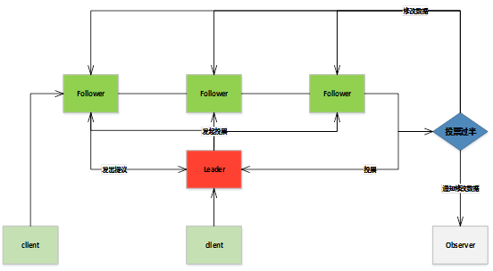

zookeeper 配置与使用
Zookeeper 一般使用场景
- 数据订阅发布
- zkclient -> watch 一个 node
- node 变化 -> notify zkclient
- zkclient -> getData
- 负载均衡
需要有 Register 角色注册信息到zk，Dispatcher 角色负责从域名到 ip 的解析，Moniter 收集服务信息状态监控。 - 命名服务
创建 SEQUENTIAL 模式节点。 - 分布式协调通知
- 集群管理
分布式日志收集: 收集器注册，任务分发，状态汇报，动态分配 - master 选举
master 宕机通知节点重新选举 - 分布式锁
排它锁
共享锁1. 抢占式创建锁节点 2. 没抢到的监听锁节点所在目录 3. 释放删除锁节点 4. 节点变化时间通知，等待的线程从新抢占锁1. 创建 SEQUENTIAL 类型节点，命名：IP_锁类型_sequential ,锁类型分为读锁写锁，读锁写锁分开处理 2. 新来的锁请求注册节点，同时监听 SEQUENTIAL 小于它的最后一个节点 3. SEQUENTIAL 最小节点获得锁，释放锁删除节点。 4. 当节点变化发送 watch 事件 5. client 收到的 watch 事件可能是释放锁导致的，也可能是客户端断开链接导致的，需要分别判定 - 分布式队列
FIFO 队列
Barrier 栅栏
Zookeeper 节点的状态
// 创建时的 zxid 和 time
cZxid = 0x20000000a
ctime = Wed Nov 09 15:41:34 UTC 2016
// 最后一次修改的 zxid 和 time
mZxid = 0x20000000a
mtime = Wed Nov 09 15:41:34 UTC 2016
// 自节点最后一次变更的 zxid
pZxid = 0x200000034
// 子节点 当前节点 acl 的 version
cversion = 10
dataVersion = 0
aclVersion = 0
// 是不是临时节点
ephemeralOwner = 0x0
dataLength = 19
numChildren = 0ACL 的 scheme 和 permission
- scheme 有 IP,Digest,World,Super
ip 是根据 ip 地址做权限校验，digest 是根据密码，world 最宽松 - permission 有 create delete read write admin 几种
使用 Docker 搭建 Zookeeper 集群
Docker file 编写，需要在 dockerfile 同文件夹下准备 jdk-8u102-linux-x64.tar.gz zookeeper-3.4.9.tar.gz 以及秘钥 id_rsa id_rsa.pub
秘钥通过 ssh-keygen 生成# Using NetEase hub, the mirror has replaced the apt source mirror as a mirror of NetEase FROM hub.c.163.com/public/ubuntu:16.04 MAINTAINER acyouzi <acyouzi@acyouzi.com> ENV JDK_PACKAGE jdk-8u102-linux-x64.tar.gz ENV ZOOKEEPER_PACKAGE zookeeper-3.4.9.tar.gz WORKDIR /opt/ # jdk COPY ${JDK_PACKAGE} /opt/ RUN tar -xf ${JDK_PACKAGE} RUN echo "export JAVA_HOME=/opt/$(tar -ztf ${JDK_PACKAGE} | head -n 1|cut -d '/' -f 1)" >> /etc/profile RUN echo "export PATH=\$PATH:\$JAVA_HOME/bin" >> /etc/profile RUN rm ${JDK_PACKAGE} # zookeeper COPY ${ZOOKEEPER_PACKAGE} /opt/ RUN tar -xf ${ZOOKEEPER_PACKAGE} RUN echo "export ZOOKEEPER_HOME=/opt/$(tar -ztf ${ZOOKEEPER_PACKAGE} | head -n 1|cut -d '/' -f 1)" >> /etc/profile RUN echo "export PATH=\$PATH:\$ZOOKEEPER_HOME/bin" >> /etc/profile RUN rm ${ZOOKEEPER_PACKAGE} # ssh key RUN mkdir /root/.ssh WORKDIR /root/.ssh COPY id_rsa /root/.ssh/ COPY id_rsa.pub /root/.ssh/ RUN echo "StrictHostKeyChecking no" >> /root/.ssh/config RUN echo "UserKnownHostsFile /dev/null" >> /root/.ssh/config RUN cat id_rsa.pub >> authorized_keys # sshd -d ENTRYPOINT ["/usr/sbin/sshd","-D"] WORKDIR /运行 docker build 创建镜像
配置集群，这个网上教程很多，为了方便我写了一点脚本来帮助创建集群。可以从这里下载
运行 configure.sh 可以创建集群，运行 start-cluster.sh 可以启动集群。在创建集群前需要先创建网桥 br0,并且分配 ip
brctl addbr br0 ifconfig br0 192.168.0.1/24
api 与基本使用
java api 常用的有：
// 其中 sessionId sessionPasswd 可用 public long getSessionId() public byte[] getSessionPasswd() 获取
public ZooKeeper(String connectString, int sessionTimeout, Watcher watcher,long sessionId, byte[] sessionPasswd, boolean canBeReadOnly)
// 同步与异步创建节点
public String create(final String path, byte data[], List<ACL> acl, CreateMode createMode)
public void create(final String path, byte data[], List<ACL> acl, CreateMode createMode, StringCallback cb, Object ctx)
// 同步 异步 删除
public void delete(final String path, int version)
public void delete(final String path, int version, VoidCallback cb, Object ctx)
// getData
public byte[] getData(final String path, Watcher watcher, Stat stat)
public void getData(final String path, Watcher watcher, DataCallback cb, Object ctx)
// setData
public Stat setData(final String path, byte data[], int version)
public void setData(final String path, byte data[], int version, StatCallback cb, Object ctx)
// getChildren
public List<String> getChildren(final String path, Watcher watcher)
public void getChildren(final String path, Watcher watcher, ChildrenCallback cb, Object ctx)
// exists
public Stat exists(final String path, Watcher watcher)
public void exists(final String path, Watcher watcher, StatCallback cb, Object ctx)
// 设置权限信息 acl
public void addAuthInfo(String scheme, byte auth[])
// 有 CONNECTING, ASSOCIATING, CONNECTED, CONNECTEDREADONLY, CLOSED, AUTH_FAILED, NOT_CONNECTED 几种状态
public States getState()常见会话状态
CONNECTING 正在连接
CONNECTED 已经连接成功
CLOSED 连接关闭
AUTH_FAILED 认证失败 watch event 的 KeeperState 和 EventType
// 主要关注 SyncConnected 状态
KeeperState.Disconnected (0)
KeeperState.SyncConnected (3)
KeeperState.AuthFailed (4)
KeeperState.ConnectedReadOnly (5)
KeeperState.SaslAuthenticated (6)
KeeperState.Expired (-112)
// EventType 是事件类型 主要关注 Create Delete DataChanged ChildrenChanged
EventType.None (-1),
EventType.NodeCreated (1),
EventType.NodeDeleted (2),
EventType.NodeDataChanged (3),
EventType.NodeChildrenChanged (4);实例
public class TestDistributedClient {
public static String ZK_HOST = "zk1:2181,zk2:2181,zk3:2181";
public static List<String> list = null;
public static ZooKeeper client = null;
public static void getZkClient() throws Exception{
client = new ZooKeeper(ZK_HOST, 3000, (event)->{
try {
if (event.getType() == EventType.NodeChildrenChanged){
// do something
// 监听只起一次作用 需要从新添加监听
client.getChildren("/acyouzi",true);
return;
}
} catch (Exception e) {
e.printStackTrace();
}
});
// 等链接建立好，会话状态变为 CONNECTED 再返回
while (client.getState() != ZooKeeper.States.CONNECTED){
System.out.println("wait for connected");
Thread.sleep(100);
}
}
public static void main(String[] args) throws Exception {
TestDistributedClient.getZkClient();
list = client.getChildren("/acyouzi",true);
for(String str :list){
System.out.println(str);
}
Thread.sleep(Long.MAX_VALUE);
}
}Leader 选举
选举过程中的集群状态
Looking 启动时，还没有找到Leader
Following 参与投票，但没有成为Leader
Leading 参与投票，并且成为了Leader
Observing 不参与投票票的结构
id -> myid
zxid -> 事务id
electionEpoch -> 表示第几轮投票
peerEpoch -> 被推举的 leader 的投票轮次
state -> 当前服务器状态选举流程
早期 zookeeper 有三种选举算法，但是现在只有 TCP 版本的 FastLeaderElection 这一种选举算法了。
首先说明一下简化的投票格式定义为 (myid,zxid), myid 是我们自己定义的，zxid 每个机器上事务号，如果是一个新机器 zxid 都是 0 . 选举过程如下：
1. 初始都投票给自己
2. 接收到来自其他服务器的投票，检查投票轮次，是否来自 Looking 状态的服务器
if 投票轮次 > 内部轮次 ： 丢弃所有投票，更新投票轮次，以初始化的投票进行pk，发出投票。
if 投票轮次 < 内部轮次 ： 丢弃，不做任何处理
if 投票轮次 == 内部轮次 ： 比较 zxid 与 myid
3. 处理投票结果：zxid 大的服务器优先作为leader,zxid 相同 myid 大的优先作为 leader.
4. 统计投票结果,若某服务器得票过半(n/2+1),则成为 leader,否则继续投票
5. 改变机器大小例子
- 假设有三个节点 zk1,zk2,zk3 myid 分别对应 1,2,3。组成一个集群，当集群首次启动时假设先启动zk1。zk1 根据配置文件知道集群中有三个机器。
- zk1 进行投票，第一次投票(1,0) 但是因为其他节点尚未启动，索引没有票数过半的机器，选举失败。这时候在启动 zk2 进行第二轮投票, zk1的投票还是 (1,0)，zk2 的投票是 (2,0).
- 然后 zk1 收到 zk2 的投票，首先比较 zxid 相同，然后比较 myid, 发现 zk2 的 myid 比较大，第三轮投票时 zk1 的投票变为 (2,0)
- zk2 获得两票，票数过半，成为Leader, 再启动zk3时，zk3 发现集群中已经有leader了就不再投票了。
写数据
Zookeeper 集群中的几种角色
Leader 数据同步、发起选举
Follower 响应客户端请求，并在选举的过程中投票
Observer 响应客户端请求，不参与投票
Client 发送请求Zookeeper 请求处理的消息类型
Request Learner -> Leader 事务请求交由 Leader 处理
Proposel Leader -> Follower leader 发起投票
Ack Follower -> Leader proposal 投票的反馈
Commit Leader -> Follower 收到过半 ack 后，告知节点提交事务
Infrom Leader -> Observer 告知 Observer 更新数据写数据过程

事务日志和snapshot
事务日志存放于 dataDir/zk_log/ 目录下，是二进制格式的日志，需要使用 java LogFormatter log-file-name 来生成能够阅读的格式
snapshot 存放于 dataDir/version-2/ 目录下，使用 java SnapshotFormatter snapshot-file 来生成能够阅读的格式
默认情况下进行 50000 - 100000 次事务后会进行一次快照存储，snapcount 默认值是 100000 ，但是为了避免整个集群到了 snapcount 集中一起备份导致性能问题，zookeeper 采用了随机备份策略
logcount > (snapcount/2 + rand )rand 是一个从 1 到 snapshot/2 的随机数。当上式为真时就进行 snapshot 备份。
zookeeper 初始化时会先从 snapshot 加载数据，得到一个接近完整数据的集合，然后再根据事务日志订正数据。
运维相关的命令
可以通过 telnet 连接到 zookeeper 服务器通过以下命令查看服务器状态
stat
conf
cons(连接信息)
dump(集群的所有会话信息)
envi
ruok( are you ok 的意思 )
wchs(Watcher 相关信息)
wchc(Watcher 相关信息)